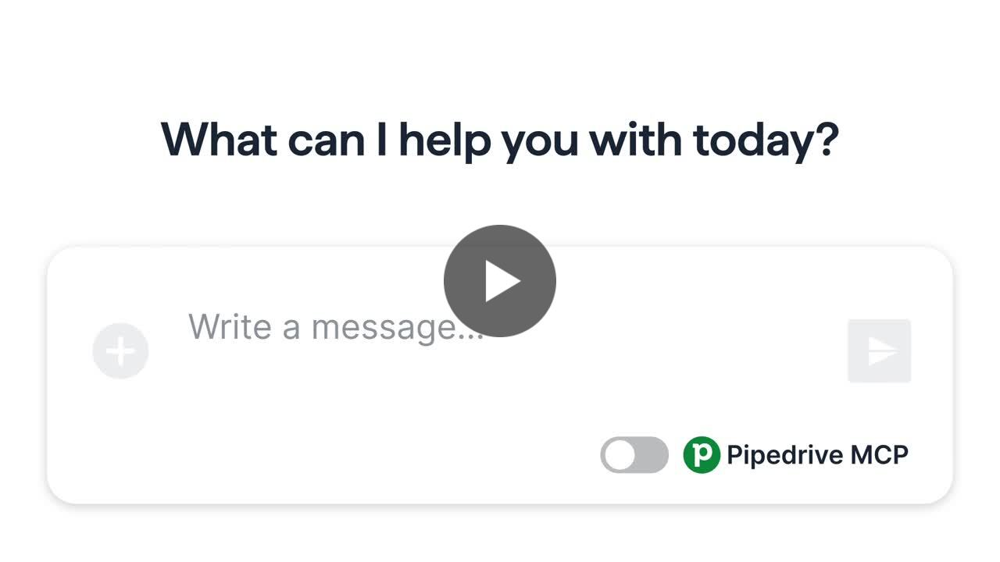
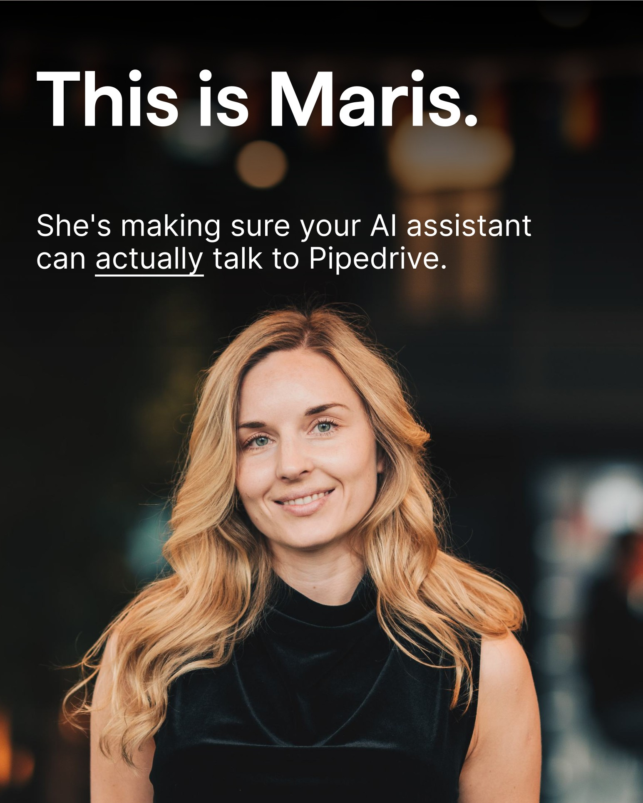

~20%of Pipedrive companies using MCP within 3 months of GA
40kactive MCP users in that time
+26%paying companies actively using Projects in 4 months
~33%fewer SE escalations from self-serve data restore
4kcompanies in the AI Beta Program, built from zero
Profile
About me
I'm a Senior Product Manager who takes on new, ambiguous product areas and turns them into clear direction and results. My background mixes UX and design systems, experimentation, growth and AI.
I use Claude with MCP integrations daily in my work, and I build AI-powered features, MCP servers and agentic integrations.
Product strategy
0 to 1 execution
Roadmapping
Stakeholder management
Customer discovery
Experimentation and A/B testing
AI and MCP
Design systems
Data-informed decisions
Career
Experience
June 2022 – present
Senior Product Manager
Pipedrive · Tallinn
Led core experiences: MCP, the Projects add-on, AI features, data restoration, a discoverability framework for all product features and a company-wide quick-wins programme.
- Product lead for Pipedrive's public MCP server and a set of sales skills, from proof of concept to GA (June 2026), with official listings in Claude and ChatGPT. Within three months of GA: 40k active users and 20% of Pipedrive companies.
- Led the collaboration side of Projects, one of our best-earning add-ons (about $1.4M ARR). In four months the number of paying companies actively using Projects grew 26%, from 4.3k to 5.5k.
- Grew the AI Beta Program from nothing to 4k companies, now one of the main ways customers find new AI features. Shipped AI features from summaries and scoring to workflow automation, working with ML engineers from idea to tuning.
- Led a self-serve data restore and revert initiative, cutting SE escalations by about 33% across nearly 4k annual conversations and protecting ~$480K of potentially affected ARR.
- Built from scratch and led the 12-person Global Experience tribe (usability, feature adoption, consistency, AI direction).
- Built the feature discoverability framework, and audited in-app messaging across 14 teams, removing nearly 25% of redundant messages.
March 2021 – June 2022
Product Manager, User Experience
Pipedrive · Tallinn
Focused on scalable product foundations and experimentation capabilities that let teams make better, faster, data-driven decisions.
- Led a platform team of about 20 engineers that owned the design system and the frontend frameworks every product team builds on.
- Contributed to the web app brand update and a major navigation redesign. After the relaunch, campaign recall roughly doubled in the US, UK and Germany (four-wave brand tracking, about 500 respondents per market).
- Introduced Amplitude Experiment, taking the company from dozens to hundreds of A/B tests a year. Mentored product managers through organisational change and team growth.
May 2018 – March 2021
Lead User Experience Analyst and Team Lead
Elisa Eesti AS · Tallinn
Led digital product and service design strategy in a large telecom under regulatory constraints: website, self-service, TV service, a dietary app and other digital channels.
May 2014 – May 2018
Sales Quality Manager
Elisa Eesti AS · Tallinn
Responsible for sales quality across a retail network of 20+ stores in cities across Estonia.
In their words
Feedback from colleagues
Maris, your impact on Projects v2 has been enormous. You dug deep into 180+ feedback items to surface real customer priorities, coordinated a smooth handover when transitioning off the team, and topped it all off by leading the MCP GA launch. Your strategic thinking and transparent communication style made complex decisions feel easy.
Maris, you're a PM thinking like a marketing pro, always asking what else we can do to make customers aware of our developments and help them get the most out of Pipedrive.
You kept the team aligned and informed without anyone having to ask and your decisions always struck the right balance between ideal and realistic.
Your collaborative and transparent approach made it easy to align, exchange ideas, and tackle challenges together. I especially appreciate your strategic thinking, willingness to seek and incorporate feedback, and your ability to keep the bigger picture in mind while driving things forward.
I've heard a lot of positive feedback about how structured and proactive you've been. Great job!
I want to give a huge shoutout to all ppl involved in launching our own public MCP server. This may actually be the beginning of a new era of integrations with Pipedrive.
This has been AMAZING! The ability to add deals, update deals, add tasks and notes in a conversational fashion, like having a personal assistant, has been AMAZING!
On LinkedIn
Posts about Pipedrive and MCP

Pipedrive MCP: AI Assistants Get CRM Access
Open post →Learning
Education and training
TalTech
Master's in Analysis and Design of Information Systems. GPA 4.74/5. Thesis: pre-analysis for a sales-driven e-commerce platform (Elisa case study).
Tallinn University
Bachelor's in Public Administration.
Certifications
- AI for Product Management
- Reforge: Advanced Product and Growth Programs
- Pragmatic Certified Product Manager